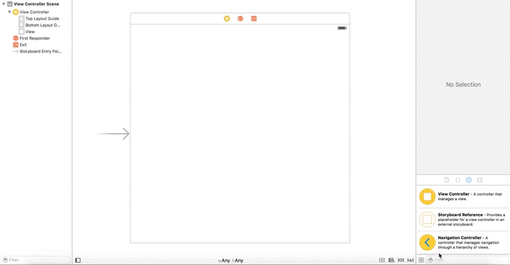
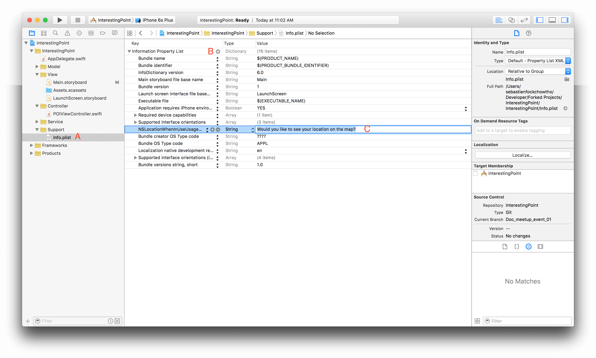

Step 1: Layout Map UI in Interface Builder
Go to your project's storyboard, and add the Map Kit View to your view controller and constraint it. The storyboard provide you a simple way to add constraints to your component by Ctrl + dragging the component to the view, add the following constraints to your map view:
- Vertical spacing to top layout guide
- Vertical spacing to bottom layout guide
- Trailing space to container margin
- Leading space to container margin
The following is an illustration of this method:

Build and run your project... we get the following error:
Terminating app due to uncaught exception 'NSInvalidUnarchiveOperationException', reason: 'Could not instantiate class named MKMapView'
This error from xCode remind you that the IB is not fully doing the work while dragging the map view component to our view controller, we need to link the MapKit.framework to enable our project to use the map features.

That's it, you get your map on your device!
Now we'd like to see our location on the map... go back to your storyboard, select your map view and check the User Location in the Utilities/Attribute Inspector. This will lead to our second error:
Trying to start MapKit location updates without prompting for location authorization. Must call -[CLLocationManager requestWhenInUseAuthorization] or -[CLLocationManager requestAlwaysAuthorization] first.
This error is clear, we need to call the method requestWhenInUseAuthorization of the CLLocationManager, so let's do it, create an instance of CLLocationManager and call the required method:
import UIKit
import MapKit
class POIViewController: UIViewController {
// MARK: - Outlets
@IBOutlet weak var mapView: MKMapView!
// MARK: - Properties
let locationManager = CLLocationManager()
// MARK: - Lifecycle
override func viewDidLoad() {
super.viewDidLoad()
// Do any additional setup after loading the view.
locationManager.requestWhenInUseAuthorization()
}
}
But this is not enough. This is due to Apple'culture which require that you inform the user about what you are going to do through your application (especially when you are using personnal data such as GPS location). By making some search in the documentation, you will find the following:
NSLocationWhenInUseUsageDescription
NSLocationWhenInUseUsageDescription (String - iOS) describes the reason why the app accesses the user’s location normally while running in the foreground. Include this key when your app uses location services to track the user’s current location directly. This key does not support using location services to monitor regions or monitor the user’s location using the significant location change service. The system includes the value of this key in the alert panel displayed to the user when requesting permission to use location services.
This key is required when you use the requestWhenInUseAuthorization method of the CLLocationManager class to request authorization for location services. If the key is not present when you call the requestWhenInUseAuthorization method without including this key, the system ignores your request.
This key is supported in iOS 8.0 and later. If your Info.plist file includes both this key and the NSLocationUsageDescription key, the system uses this key and ignores the NSLocationUsageDescription key.
So you need to add this key-value to your Info.plist file and add a new entry NSLocationWhenInUseUsageDescription with a String type and write the message you want to display to inform the user about the GPS usage:

Finally, we want to center our map on Winnipeg region. It can be done by using the setRegion() method of MK Map View and passing your region as a MKCoordinateRegionMakeWithDistance:
let winnipegCoord = CLLocationCoordinate2D(
latitude: 49.8672610886807,
longitude: -97.1576372488644
)
let viewRegion = MKCoordinateRegionMakeWithDistance(
winnipegCoord,
60000,
60000
)
mapView.setRegion(viewRegion, animated: false)